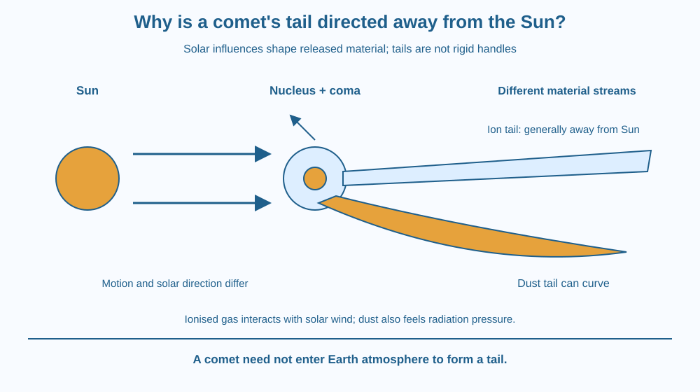

Explain why a comet's tail is shaped by the Sun rather than simply trailing behind like smoke from a moving vehicle. Distinguish the nucleus, coma, dust tail and ion tail. Recognise why the two tails can have different shapes and why neither is a solid extension of the comet.
A picture of a comet shows a bright head and a long tail. It is tempting to draw the tail directly opposite the direction the comet is travelling, as though space were air blowing past a car.
But the Sun strongly influences the escaping material. The tail's orientation can therefore differ from a simple backwards-motion arrow. Some comet pictures even show two tails with different curves.
The useful question is what material has left the comet and which solar influences act on it, rather than assuming that the visible tail is a fixed handle attached to a moving rock.
A comet's nucleus contains ice mixed with dust and rocky material. As solar heating increases under suitable conditions, volatile material escapes and carries dust outward. The surrounding cloud is called the coma.
Some escaped gas becomes ionised, meaning it contains electrically charged particles. The Sun continually supplies an outward flow of charged particles and magnetic structure known as the solar wind. Its interaction with cometary ions helps form the ion or plasma tail.
The ion tail is generally relatively straight and directed away from the Sun. Its structure reflects interaction with the solar-wind environment, not simply the direction the nucleus happens to be travelling at that moment.
The dust tail behaves differently. Sunlight exerts radiation pressure on dust, influencing its motion away from the Sun. Dust also retains motion related to the comet's path. These combined effects can produce a broader, curved tail rather than one perfectly radial line.
Therefore the statement that a comet tail points away from the Sun is a useful introduction, especially for the ion tail, but it needs qualification for dust. Real viewing geometry and changing solar conditions can further affect the apparent shape.
A tail consists of released material, not one rigid structure. Different particles leave at different times and follow different paths. The visible pattern can persist while its constituent material is continually changing.
The comet does not need to pass through Earth's atmosphere to make a tail. Solar heating and interaction with sunlight and solar wind operate in space. This separates comet tails from the atmospheric heating involved in a meteor, which is a different planned topic.
As a comet moves away from the Sun, its tail need not switch to point behind its motion like an ordinary vehicle plume. Solar direction remains central to the orientation. We focus here on the escaping-material mechanism, not the gravitational explanation of the comet's orbit.
Draw the Sun, a comet nucleus and an arrow for the comet's motion. Add a separate outward-from-Sun direction. Keeping those arrows separate prevents the common mistake of treating them as automatically opposite.
From the coma, draw one relatively straight ion tail away from the Sun and one broader curved dust tail. Label the different solar influences instead of assigning both tails exactly the same particle behaviour.
Then redraw the comet moving outward along a different part of its path. Preserve the away-from-Sun orientation logic. The model should show why a tail can appear to lead rather than trail the comet's motion in some configurations.
The SVG shows sunlight and solar wind arriving from the Sun side, a nucleus surrounded by a coma, a relatively straight ion tail and a curved dust tail. A separate motion arrow is deliberately not used as the tail's sole direction guide.
Labels identify charged gas and dust as different material streams. The diagram exaggerates sizes and does not represent a particular named comet or an observed numerical tail length.
The caption states that tails are released material shaped by solar interactions. It also warns that the dust tail is not always exactly radial, keeping the simple title from becoming an overgeneralised rule.

Comet photographs published by space agencies can show a narrow ion tail and a broader dust structure. Their colours may reflect the imaging method, so colour alone is not enough to identify every feature reliably.
Indian students may encounter comet images through observatories, newspapers or astronomy clubs. A scientifically useful image caption should identify the Sun direction and distinguish a real observation from an artist's illustration or enhanced composite.
No direct solar viewing is needed. Never search close to the Sun with binoculars or a telescope for this lesson. A published image or paper model is enough to examine the tail geometry safely.
Use paper and three colours. No dust, smoke or outdoor equipment is required.
Repeat the drawing with the comet moving outward. The activity is a directional model, not a calculation of actual particle trajectories. Keep the Sun-facing geometry fixed while changing the motion arrow so the comparison answers the intended question.
Why would a tail containing particles released at many different times fail to behave like a rigid rod attached to the nucleus? Consider continuing supply and changing particle positions.
Now explain why “tail” does not mean “always behind the motion.” Everyday names can suggest a familiar analogy that fails under different physical conditions. Identify the solar direction that your improved model must preserve.
What is the coma of a comet?
Answer: C — The coma is the surrounding cloud of escaped gas and dust near the nucleus.
Why can the dust and ion tails have different shapes?
Answer: A — Radiation pressure and solar-wind interactions affect the material streams differently.
A comet moves away from the Sun. Must its ion tail point behind that motion?
Answer: B — The ion tail is shaped mainly by solar interaction rather than a simple backwards-motion rule.
Correct a cartoon that draws every comet tail directly opposite its velocity arrow. Add the Sun, identify dust and ions, and explain their different responses.
Include one qualified statement: the ion tail is generally directed away from the Sun, while the dust tail can curve. Do not give an invented length or claim that one simplified drawing predicts every photograph's exact appearance.
A comet can leave its tail material behind without the visible tail always pointing behind its direction of travel. The shape is the history of many particles acted on by solar influences. Treating that pattern as a fixed body part hides the very mechanism that makes it interesting.
Comet tails are escaping material shaped by solar interactions: ions generally stream away from the Sun, while dust responds differently and can form a curved tail.